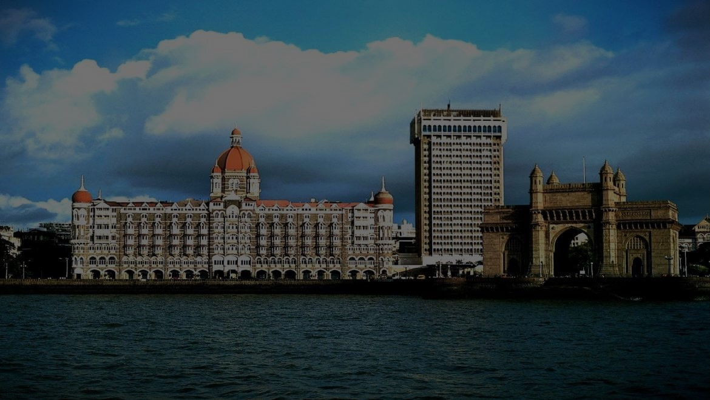

MUMBAI
PLACES TO VISIT

INTERESTING PLACES TO VISIT
Monastir’s charms are underrated: the medina may pale in comparison with those in Sousse, Sfax and Mahdia, but the well-preserved ribat (fort), imposing Mausoleum of Habib Bourguiba and busy modern marina complex makes Monastir a very popular destination among travellers looking for a beach holiday with an accent on tradition.

The TajHotel Of Mumbai
The majestic Taj Hotel, overlooking the Arabian Sea in Mumbai, stands as a testament to India's rich history and architectural grandeur. The hotel is located in the heart of the city .

SOUK Temple
Explore the Souk Temple in Monastir, a vibrant marketplace offering an array of treasures. From carpets and ceramics to jewelry and antiques, discover unique finds in this bustling hub just outside the historic Ribat's walls.
Marine Drive
Experience Mumbai's Marine Drive: a scenic promenade by the Arabian Sea, famous for stunning sunsets and vibrant ambiance. Perfect for leisurely strolls and breathtaking views of the city skyline.
Nexon Beach
Nexon Beach is a tranquil haven nestled along the coast, offering serene shores and captivating vistas. With its soft sands and clear waters, it's the perfect retreat for relaxation and rejuvenation. Explore the beauty of Nexon Beach and immerse yourself in the tranquility of nature."
CHTRAPATI SHIVAJI TERMINALS
A fine example of Islamic military architecture, Monastir’s immaculately preserved ribat (coastal fort housing religious military volunteers called murabitun) overlooks the Mediterranean. Dating from AD 797, its seemingly chaotic design, with labyrinthine passageways and staircases, is a legacy of the many periods of construction and renovation it has undergone over its long history.The oldest remaining (though heavily restored) sections include the nador (watchtower) and the area around its base, all of which date from the 8th to 10th centuries.